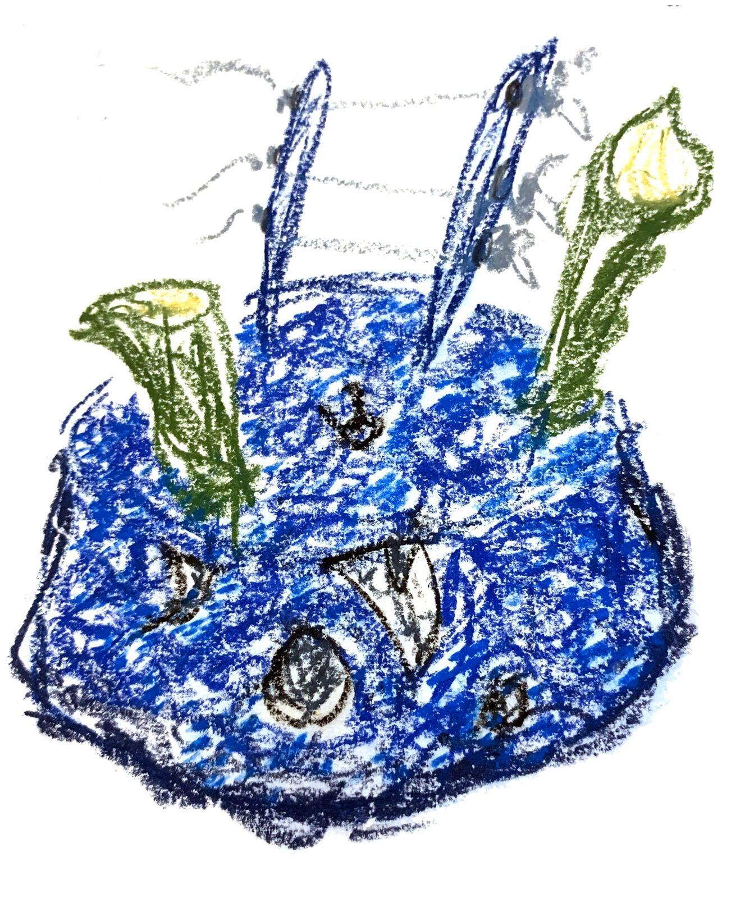
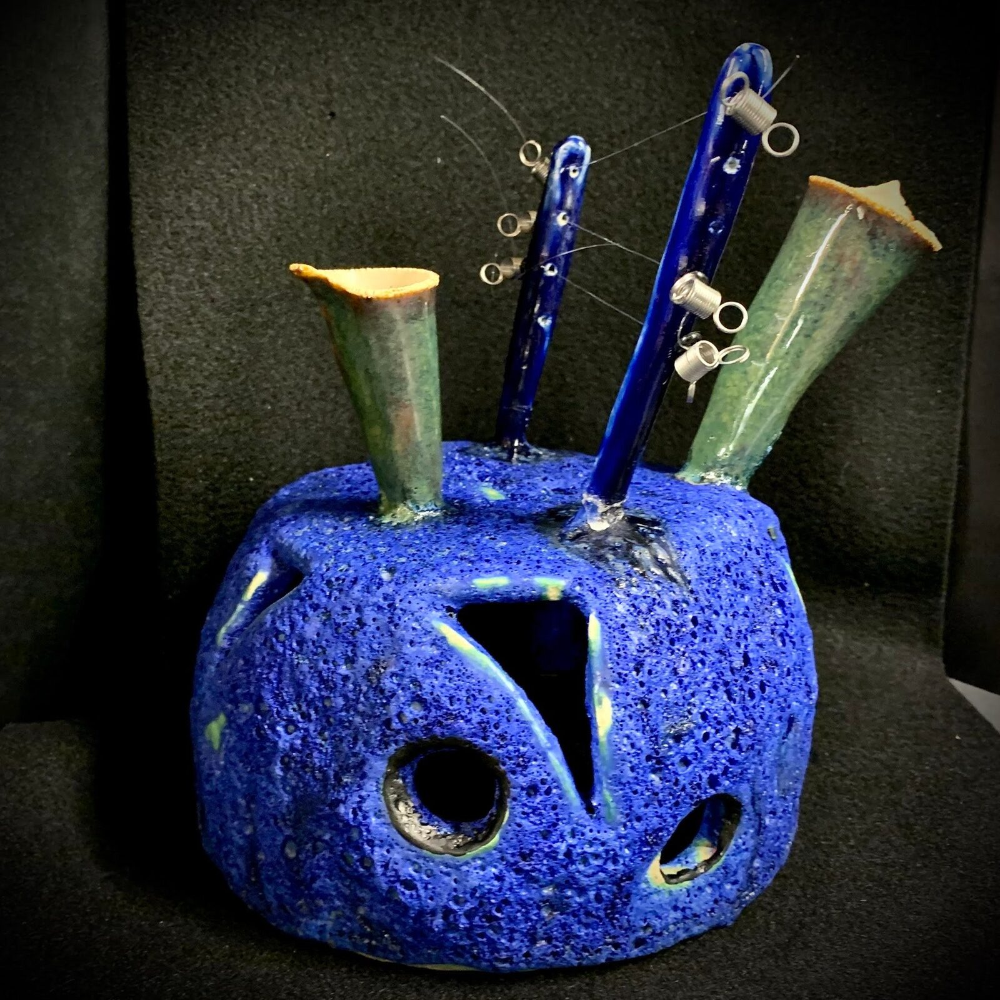
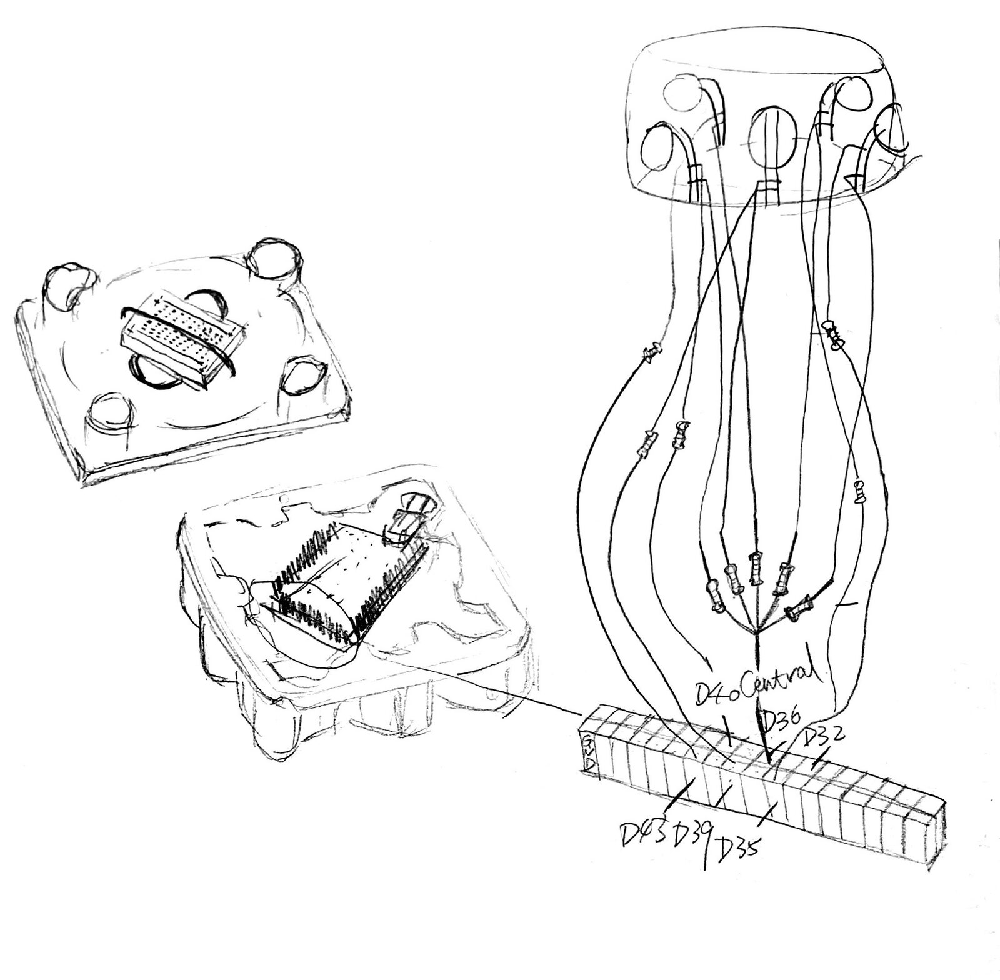
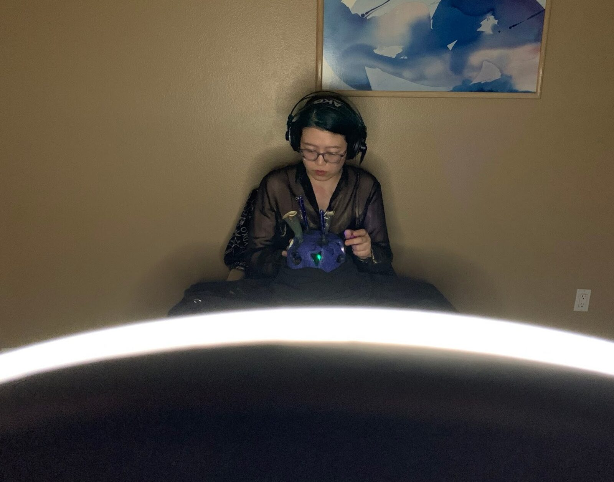
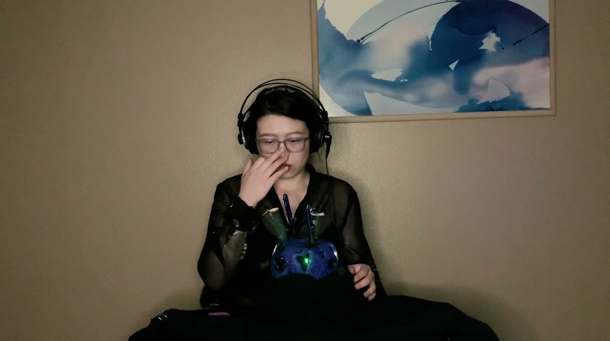

Sound of Mermy
PROJECT DESCRIPTION
Mermy is an augmented ceramic instrument shaped as a female marine creature, acting as the player's avatar during the performance. The physical body of Mermy offers multiple playing possibilities as an instrument: idiophone, chordophone, and aerophone all together. An embedded contact microphone is used to pick up the acoustic sound, for both amplification and processing purpose. Five windows around the body serve as tangible sensors, which control digital treatments and trigger LED lights from within.
This music performance is an illustration of an uncanny world through the sound of Mermy. Interactions between the performer and the instrument are subtle, precise and intimate, adding to the immersive, ritualistic atmosphere of the piece.
PROGRAM NOTES
Breathe, Whistle, Sing,
Infuse my voice into the water.
Later, it will bring them back to me.
PERFORMANCE REQUIREMENTS
- equipment: two XLR cables from the author’s audio interface to the performing space audio system (audio mixer, speakers) If for some reason, cannot perform off-line, This work is able to streaming to the author’s internet channels, such as youtube, twitch, bilibili, through OBS.
- space: If possible for off-line performance, this performance is better placed in a closed small enviroment, such as gallery, where the audience are able to sit near the performing area.
- performer(s): The piece will played by the composer/performer.
- feasibility: This piece has performed in the CalArts Weekend Online Live Event of the California Institue of the Arts, October, 2020. CalArts Weekend Program(warning: this program will show the composer’s name): https://www.instagram.com/p/CGYAal1pBcc/









▶